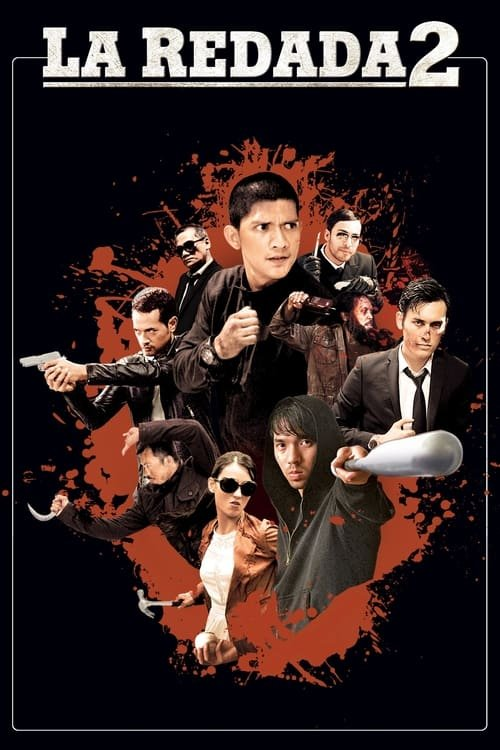

Redada Asesina 2 (2014)
Sinopsis Rápida
Tras una sangrienta redada, el inspector Rama se ve obligado a una peligrosa infiltración en el corazón del hampa de Yakarta. ¿Podrá proteger a su familia y desenmascarar la corrupción que carcome a la policía desde adentro?
Sinopsis Detallada
En Redada Asesina 2, la acción no descansa. Poco después de la impactante primera entrega, Rama se enfrenta a una nueva amenaza aún más peligrosa: la infiltración en el sindicato del crimen de Yakarta. Esta misión desesperada es su única opción para proteger a su familia de la represalia de los criminales, mientras simultáneamente desentierra una profunda conspiración que llega hasta las altas esferas de la propia fuerza policial. La película ofrece secuencias de acción trepidantes y un suspense constante que te mantendrá al borde de tu asiento hasta el final. Una compleja red de traiciones y lealtades ambiguas te hará cuestionar quién es realmente el enemigo.
¿Por qué tenés que verla?
- Acción frenética y sin respiro que te mantendrá enganchado de principio a fin.
- Excelente coreografía de las escenas de lucha, que destacan por su realismo y brutalidad.
- La película explora temas relevantes sobre la corrupción policial y la lucha contra el crimen organizado.
- Una secuela que mantiene la intensidad y el ritmo de la primera entrega.
Idea Extra
Comparación de la violencia y el realismo en ambas películas de la saga 'Redada Asesina', analizando su evolución y el impacto en el espectador.